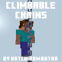
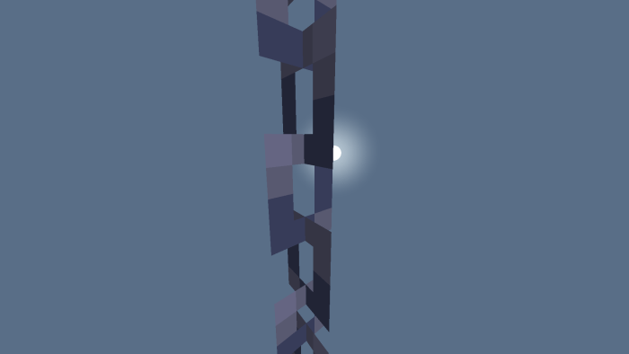

This addon was suggested to me by a Member of My Discord Server and is inspired by Wattles Java Edition Climbable Chains Data Pack. This Pack Can be Slightly buggy.

Climbable Chains
This Addon Adds the Functionality of Climbable Chains. To Use it Walk Up to the chain facing forward and it will lift you up similar to a ladder.

Normal Chains
Why can you not make it like a ladder or Vine?
Bedrock does not support all types of custom blocks yet
Why do sideways chains not work?
There is a bug preventing that. If you can vote for it Here
All of my addons are compatible with all devices and all of my other addons. This addon is compatible with all other addons.